Emotional Family Stories
Long, heart-touching stories about family — love, loss, forgiveness, and the moments that stay with us forever. New stories added regularly.
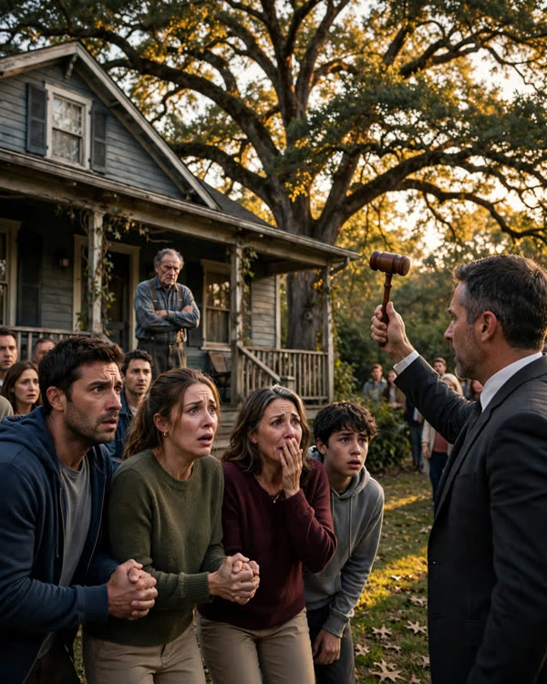
The Auction 🔨
My father auctioned off our childhood home on a Tuesday morning — and he didn't tell any of us until the bidding started.…
Read the full story →
The Empty Pew ⛪
The Sunday after my grandfather's funeral, a stranger was sitting in his pew.…
Read the full story →
The Train Station 🚂
My father has driven to the train station every Friday for eleven years — to pick up someone who never arrives.…
Read the full story →
The Wedding Run 👰
My sister ran out of her own wedding — halfway down the aisle, in front of two hundred guests.…
Read the full story →
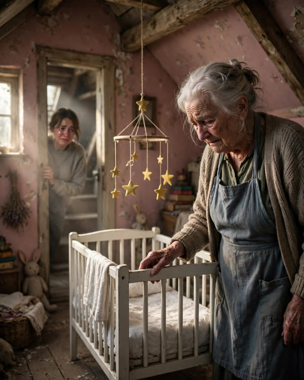
The Nursery 🍼
There was a nursery in my grandmother's attic — a crib, tiny folded clothes, a mobile of yellow stars — for a baby who never came home.…
Read the full story →
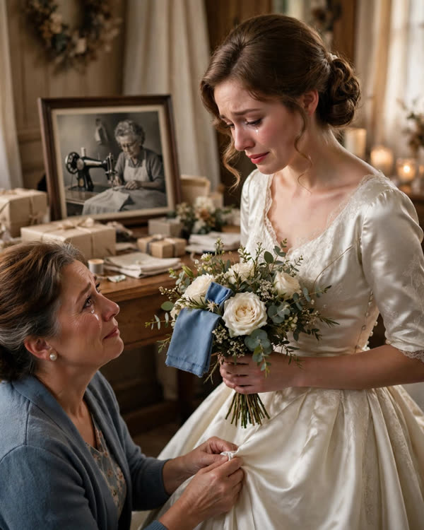
The Dress 👗
My daughter found another woman's name sewn into the hem of my wedding dress.…
Read the full story →
The Last Stop 🚌
Two hundred grown adults skipped work on a Tuesday to stand at a school bus stop.…
Read the full story →
The Two Tickets 🎫
I found two tickets in my son's backpack on a Thursday night. One had his name on it. The other had mine.…
Read the full story →
The July Lights 💡
The house at the end of our street turned on ten thousand Christmas lights in the middle of July.…
Read the full story →
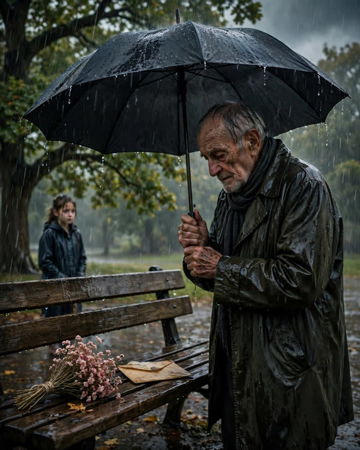
The Umbrella ☂️
My eighty-one-year-old grandfather stood in pouring rain for three hours yesterday, holding an umbrella over an empty park bench.…
Read the full story →
The Last Summer ☀️
We sold the lake cabin. Then the new owners called about the walls. The cabin was in our family for forty years. My parents bought it in…
Read the full story →
The Watch ⌚
My grandfather's watch stopped the day he died. It started ticking at my wedding. His name was Walter. He raised me from the time I was…
Read the full story →
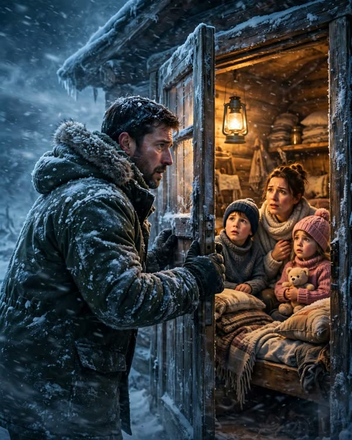
The Snowstorm ❄️
My father walked out into the blizzard. And closed the door behind him. I was ten. It was December, the week after Christmas, and we…
Read the full story →
The Vow Renewal 💒
My father forgot my mother's name. In front of eighty guests. It was their fiftieth anniversary. The vow renewal was Mom's dream — she'd…
Read the full story →
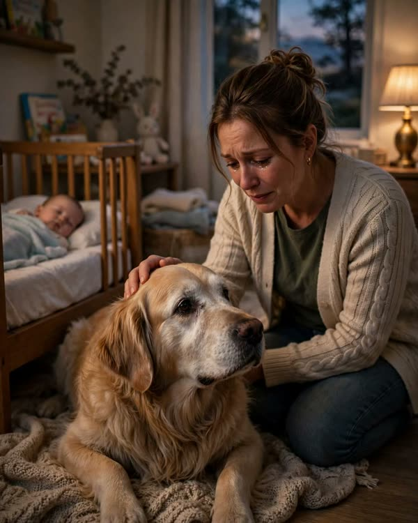
The Old Dog 🐕
The dog waited by the door for 214 days. My father had been gone 214 days. Buster was fourteen, a golden retriever with a gray muzzle…
Read the full story →
Pancake Sundays 🥞
The smoke alarm went off at 7 a.m. My brother was making Dad's pancakes. I'm Tyler, sixteen. My brother Chris is nineteen. Our dad died…
Read the full story →
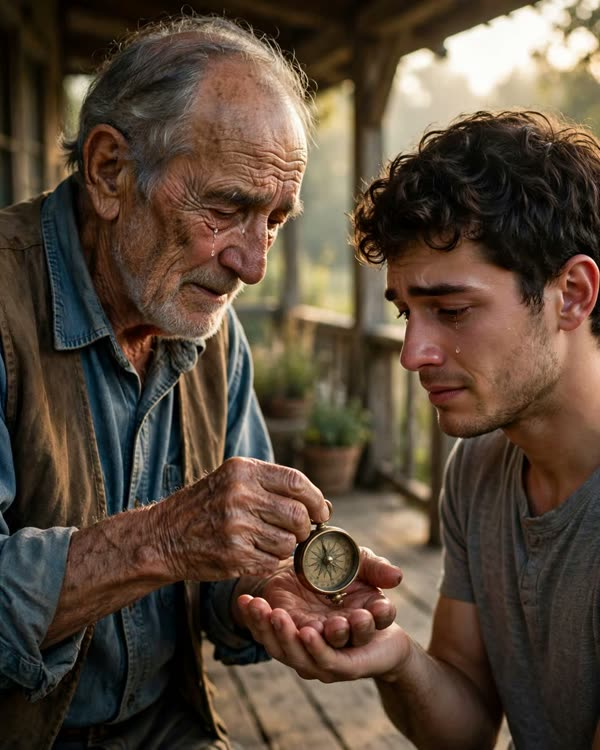
The Compass 🧭
The compass didn't point north. It hadn't in sixty years. My grandfather Henry gave it to me the night before I left for college — three…
Read the full story →
The Treehouse 🌳
The treehouse had four names carved into the wood. There are only three of us.…
Read the full story →
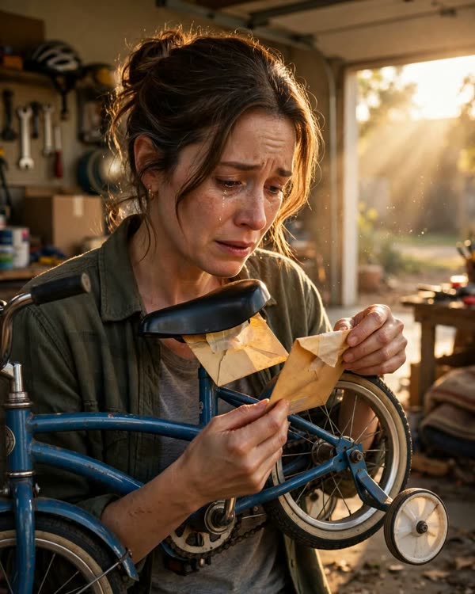
The Blue Bicycle 🚲
The bike still had its training wheels. My daughter is thirty-four.…
Read the full story →
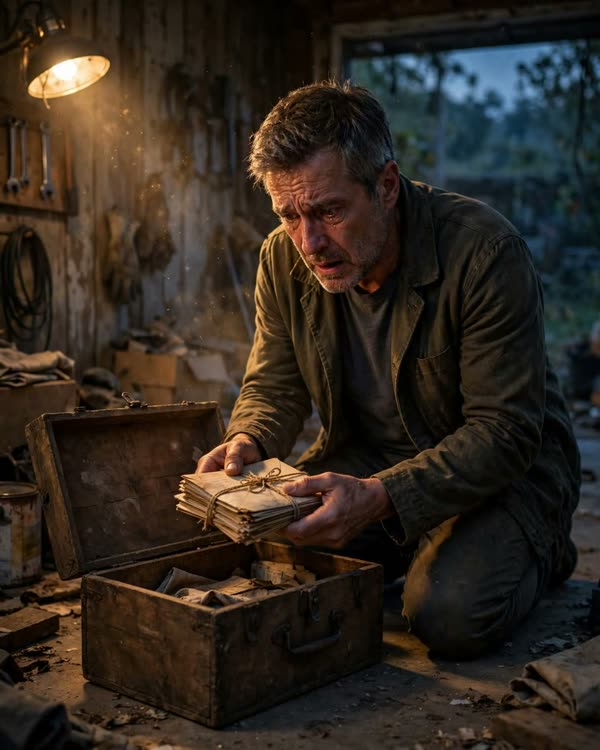
The Toolbox 🔧
My father labeled his tools. Not with his name. With ours. I found out three weeks after the funeral. My sister Maya called on a Tuesday…
Read the full story →
Christmas When Dad Walks In
In our house, Christmas never started until we heard Dad's boots in the driveway — even if that wasn't until 6 p.m. on December…
Read the full story →
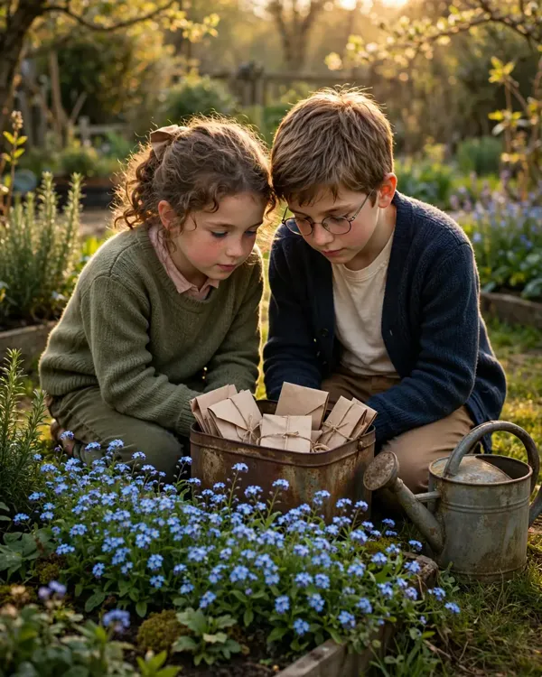
Grandpa's Garden
The spring after Grandpa died, the tomatoes came up anyway.
Read the full story →
Kitchen Dancing
Every evening of my parents' marriage, at six-fifteen, my father turned on the kitchen radio and danced with my mother between…
Read the full story →
Sign Language
On my mother's sixty-second birthday, my father stood up in the middle of her party, raised his hands, and told her he loved her…
Read the full story →
The 5 A.M. Call
For one full year, my grandmother called me at five o'clock every single morning — and I mean every morning, including the one…
Read the full story →
The Anniversary Table
For forty years, my parents celebrated their anniversary at the same corner table, and in the forty-first year, the restaurant…
Read the full story →
The Attic Letters
We went up to the attic to throw our parents' past away, and instead we found out they almost never met at all.
Read the full story →
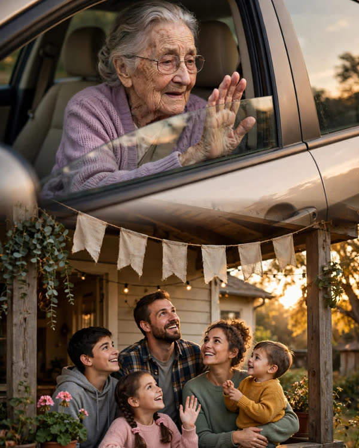
The Banner
The banner said WELCOME HOME in blue paint that has faded for thirty years — and last month, we hung it for the person who…
Read the full story →
The Bench Vow
Seventy-five years old, and my grandfather got down on one knee in front of the same park bench where he had proposed in 1971. It…
Read the full story →
The Bingo Jar
For six years, my grandfather kept his bingo winnings in a pickle jar, and he wouldn't let anyone in the family touch a single…
Read the full story →
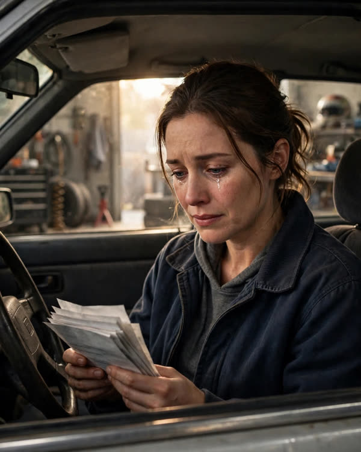
The Borrowed Car
My mother didn't sell me her car. She lent it to me in 2016, and we both pretended for nine years that I was going to give it…
Read the full story →
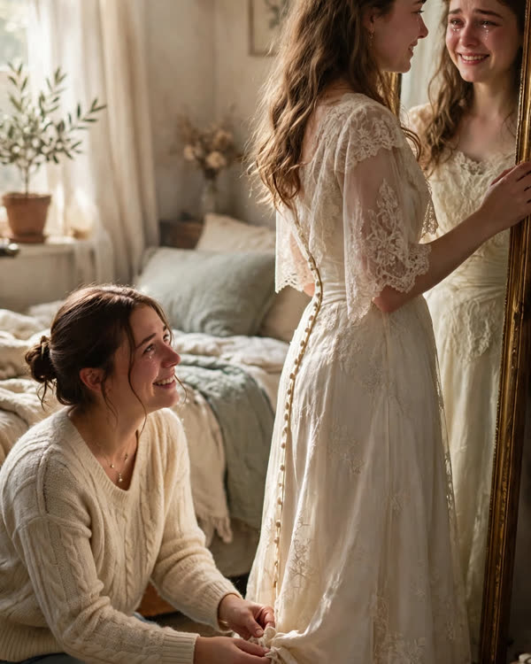
The Borrowed Dress
My sister got married in my wedding dress, and I have never told anyone what she found sewn inside it. Until now.
Read the full story →
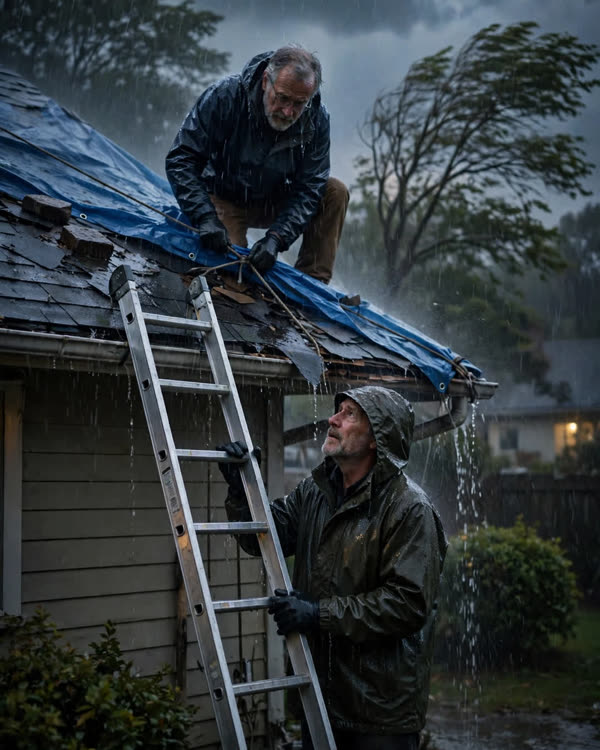
The Borrowed Ladder
The storm caught both of us on our roofs, and there was only one ladder between two men who had not spoken in four years.
Read the full story →
The Braids
My father's hands were built for freight, not hair.
Read the full story →
The Burnt Pancake
The first pancake I ever made for my daughter came out black on one side and raw in the middle, and I stood in my kitchen at six…
Read the full story →
The Bus Stop Bench
The old man was at the bus stop every morning at seven, holding a small bunch of flowers, and he never got on the bus.
Read the full story →
The Catch
There is a baseball glove in our garage that has been re-laced eleven times, and nobody in this family is allowed to throw it…
Read the full story →
The Cheap Ring
For fifty years, my grandfather apologized for my grandmother's wedding ring.
Read the full story →
The Closet Fort
The storm took the power out at 7:40 on a Friday night, and by 8:15 my grown sister was dragging every blanket in our parents'…
Read the full story →
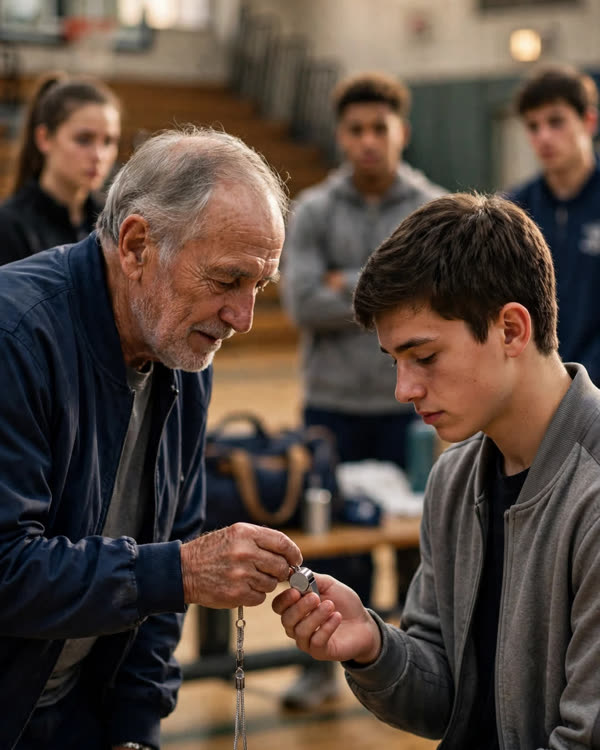
The Coach's Whistle
For four years I sat at the end of the bench, and at the last practice of my senior year, Coach Doyle gave me his whistle.
Read the full story →
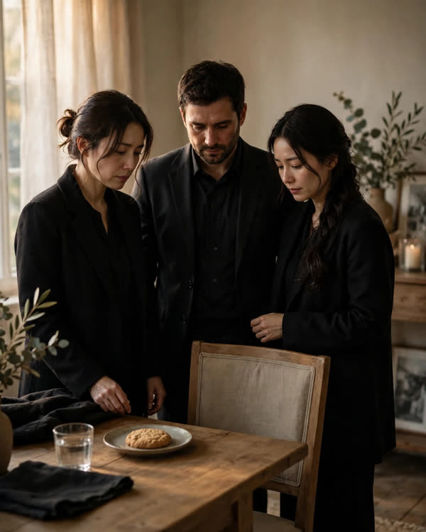
The Cookie Treaty
In the summer of 1989, my mother's cookie jar started a war, and ended it with a treaty that outlived her.
Read the full story →
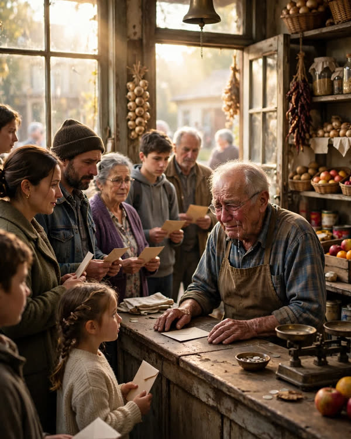
The Corner Store Tab
On the day Mr. Patel retired, forty-three people were standing in his store before he unlocked the door, and every one of them…
Read the full story →
The Detention Club
Every kid in our school knew detention was in Room 12, and nobody knew what actually happened in there — until I got sent three…
Read the full story →
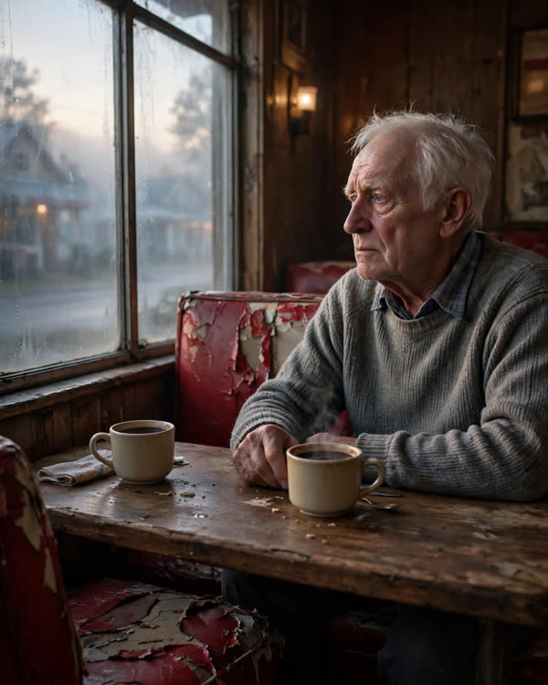
The Diner Seat
For nineteen years, my father and I had breakfast in the same booth at the same diner, and in nineteen years we never once sat…
Read the full story →
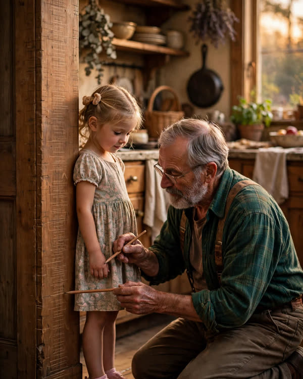
The Doorframe
The doorframe in my father's kitchen has thirty years of our family written on it in pencil, and not one mark of it is mine to…
Read the full story →
The Driving Lesson
My grandfather taught me to drive in an empty church parking lot, and he started the first lesson by turning the car off.
Read the full story →
The Empty Chair
At my graduation, there were three hundred folding chairs in the field house, and only one of them mattered.
Read the full story →
The Extra Photograph
The camera came back in the mail six weeks after I lost it, with the film already developed — and one photograph I never took.
Read the full story →
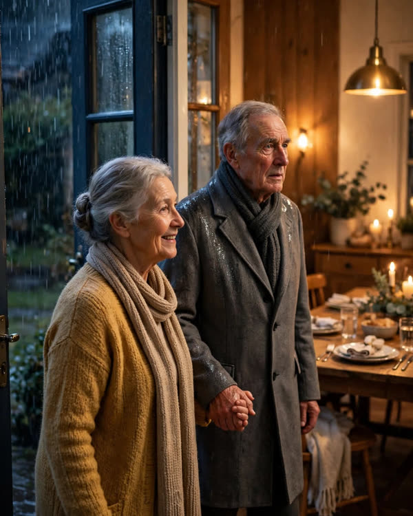
The Extra Plate
For as long as I can remember, my grandmother set seven plates for Sunday dinner, and there were only ever six of us.
Read the full story →
The Failed Student's Letter
Mr. Okafor failed exactly one student in thirty-eight years of teaching, and on the last day before his retirement, that student…
Read the full story →
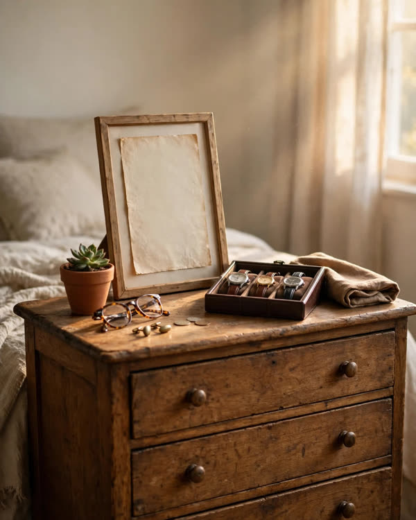
The First Paycheck
My first paycheck was for one hundred and eighty-four dollars, and I spent ninety-six of them on my father.
Read the full story →
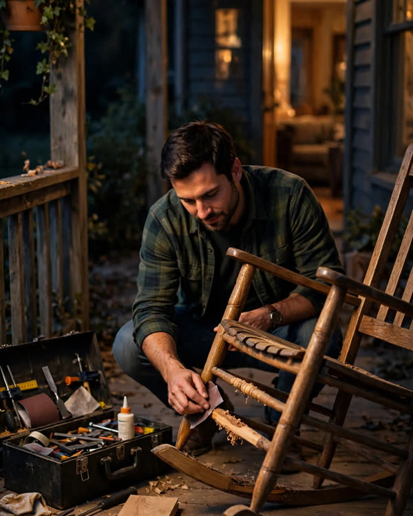
The Fixed Rocking Chair
My father-in-law's rocking chair sat broken on our porch for two years after he died — until the week I finally picked up his…
Read the full story →
The Front Pew
For twelve years, my mother sat in the front pew of the school auditorium for every performance I was in, including the ones no…
Read the full story →
The Front Row Seat
In eighteen years of recitals, my grandparents never missed a single one — so after Grandpa died, Grandma kept saving him his…
Read the full story →
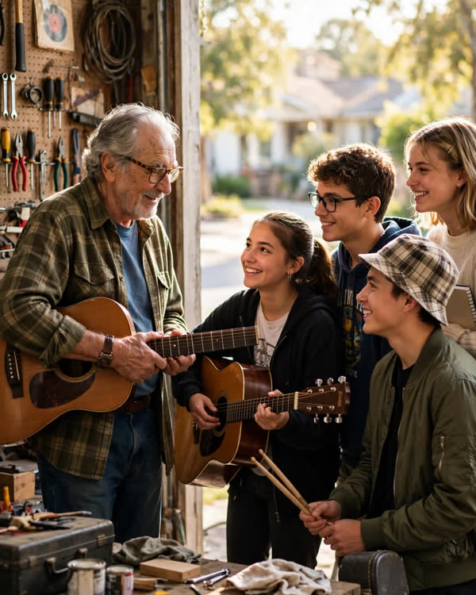
The Garage Sessions
Every Saturday for three years, the worst noise on our street came out of Mr. Russo's garage, and he never once complained about…
Read the full story →
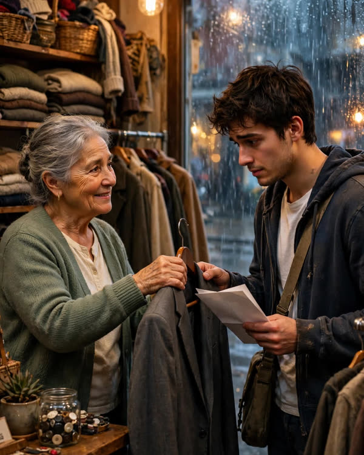
The Interview Suit
The suit was the worst one in the store, and it was the only one the young man could almost afford.
Read the full story →
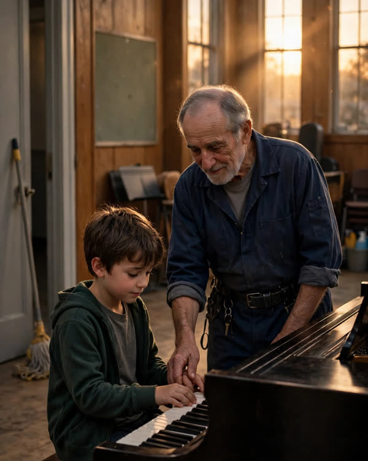
The Janitor's Piano
The janitor at our school could play the piano like the radio, and he pretended he couldn't play at all.
Read the full story →
The Kitchen Table
Everything true in our family was said at my grandmother's kitchen table, because that table was the one place nobody was allowed…
Read the full story →
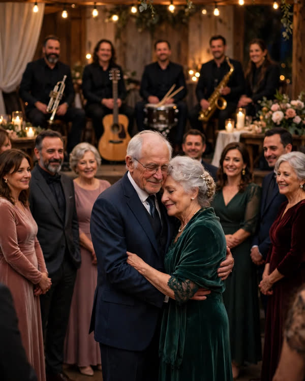
The Last Dance
At my wedding last June, the last people on the dance floor were my eighty-year-old grandparents — and the band had to stop…
Read the full story →
The Last Dog at the Shelter
The shelter worker tried to talk me out of her, and I understood why. Nobody adopts the last dog in the last kennel.
Read the full story →
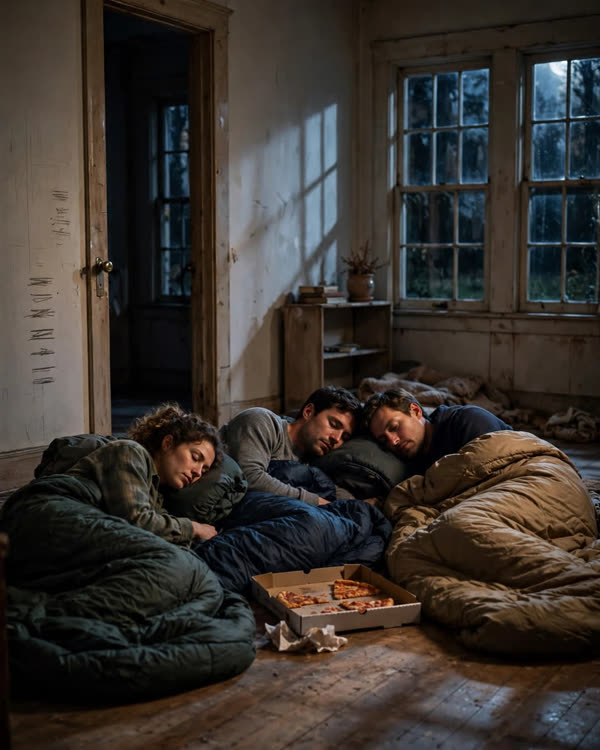
The Last Night in the House
The night before we sold our childhood home, my brother, my sister, and I slept on the living room floor like we were kids again…
Read the full story →
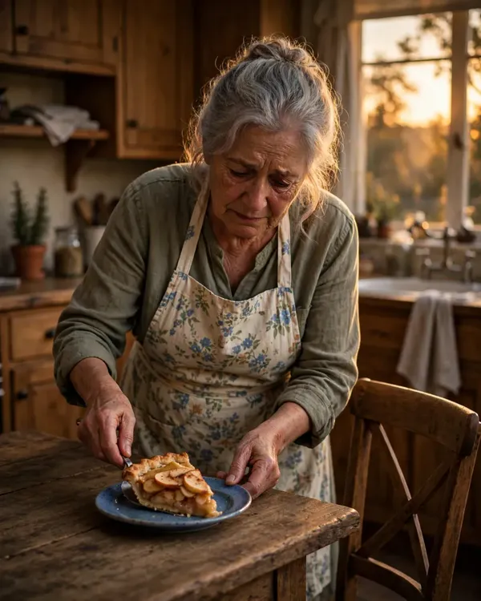
The Last Piece of Pie
Every Sunday for thirty-one years, my mother cut the apple pie into five pieces. There were only four of us at the table.
Read the full story →
The Last Rental Car
There was one car left at the rental counter, and four hundred stranded people behind us in line.
Read the full story →
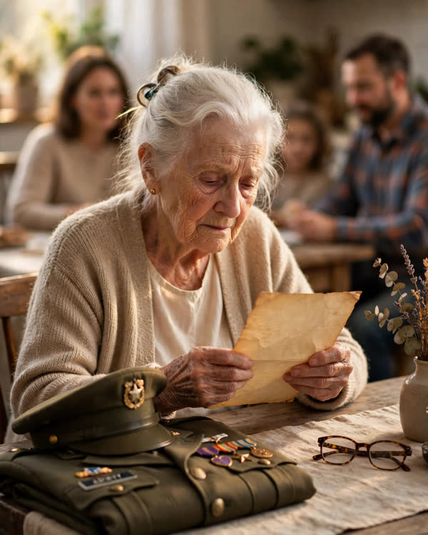
The Letter He Never Mailed
The letter had been in my grandfather's uniform pocket for seventy-one years, and my grandmother read it for the first time on…
Read the full story →
The Letter Under the Floorboard
My sister and I didn't speak for six years, and my mother died believing it was her fault.
Read the full story →
The Library Fine
The summer I was twelve, I lost a library book under my bed for four months, and it should have cost me everything I had.
Read the full story →
The Long Drive Home
My brother and I hadn't spoken in four years when our father died and left us a truck neither of us wanted and both of us refused…
Read the full story →
The Lunch Envelope
Every Monday for an entire school year, someone put two dollars in my locker, and I never told a soul.
Read the full story →
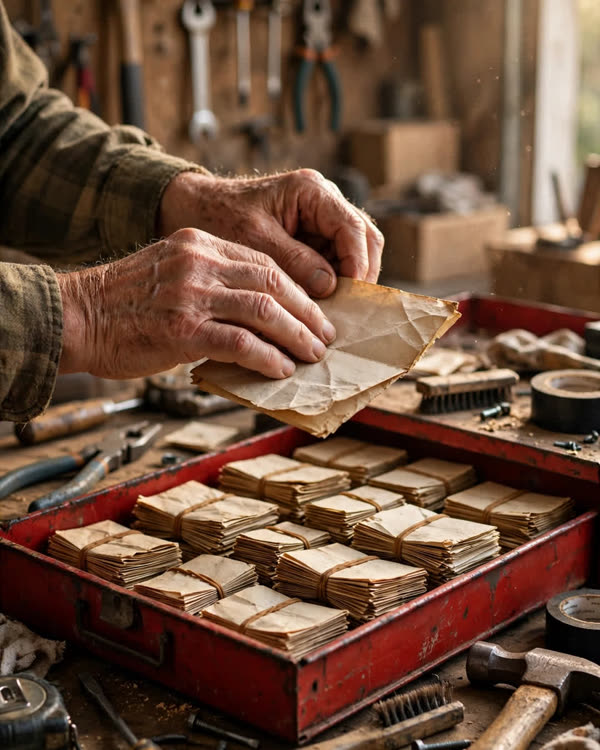
The Lunchbox Notes
For thirty-eight years, my mother wrote a note and put it in my father's lunchbox, and for thirty-eight years, he told her he…
Read the full story →
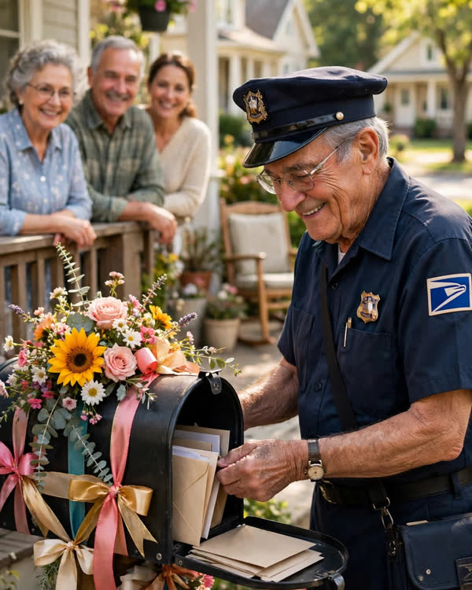
The Mailman's Last Day
On his last day after thirty-four years, Walter Reed could not finish his route, because every single mailbox on it was waiting…
Read the full story →
The Man with Flowers
Every June, at every Jefferson House graduation, an old man sat in the last row with a bouquet of flowers — and no one knew who…
Read the full story →
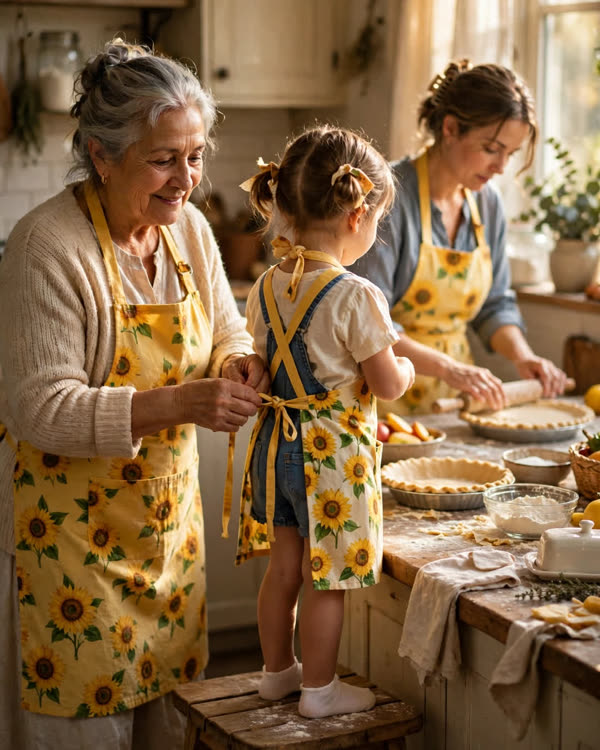
The Matching Aprons
The aprons were ridiculous, and that was the entire point — yellow, covered in sunflowers, with ruffles that served no purpose…
Read the full story →
The Midnight Cake
My mother baked every birthday cake in our family at midnight, so the cake would be the first thing the day gave us.
Read the full story →
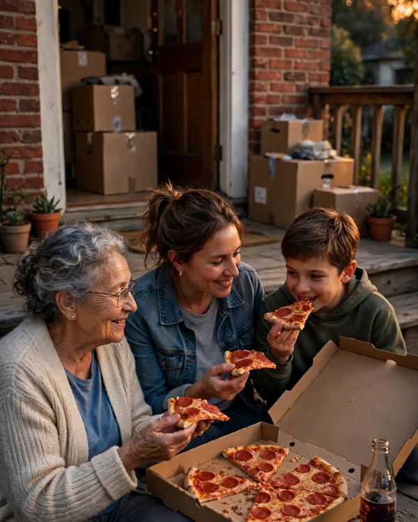
The Moving Day Pizza
Every time our family moves, we eat pizza sitting on the floor — and this spring, the last box was eaten on the porch of the…
Read the full story →
The New Year's Jar
Every New Year's Eve, my family reads the jar — and the year of the fire, it was the only thing my mother carried out of the…
Read the full story →
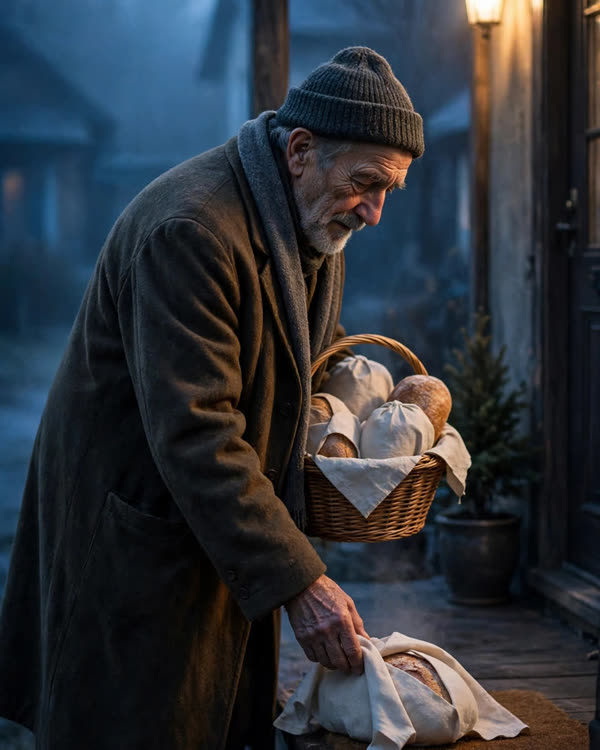
The Night Baker
For six months, someone left warm bread on porches all over our town before dawn, and nobody could figure out who it was.
Read the full story →
The Night Shift Nurse
The nurse's shift ended at seven. The old man had no one coming, so she stayed until nine.
Read the full story →
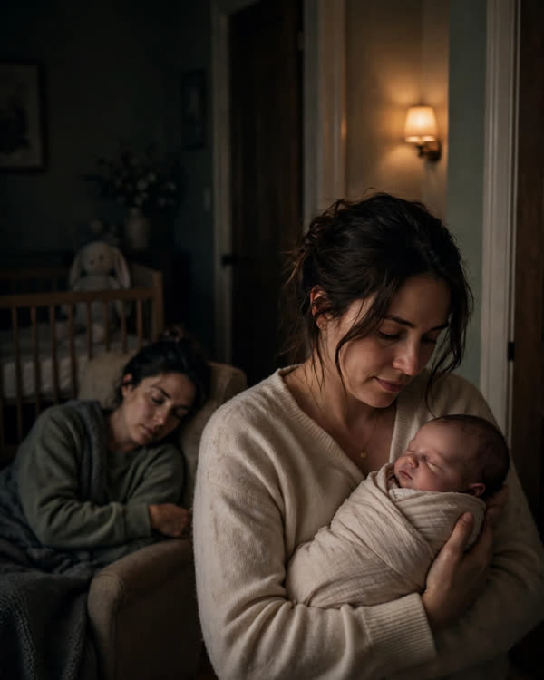
The Night Shift Sisters
My sister showed up at my door with a suitcase, a pillow, and six words: "I'm taking the nights. Sleep, Ruth."
Read the full story →
The Nightstand Glass
For sixty years, my father filled my mother's water glass every night before bed, and she never once thought about it — until the…
Read the full story →
The Note in the Book
The library book was due back in 1994. Somebody returned it thirty years later — with a note inside that saved my senior year.
Read the full story →
The Note Under the Door
In sixteen years, my father never once said the words "I'm sorry" out loud. Not to anyone. Not about anything.
Read the full story →
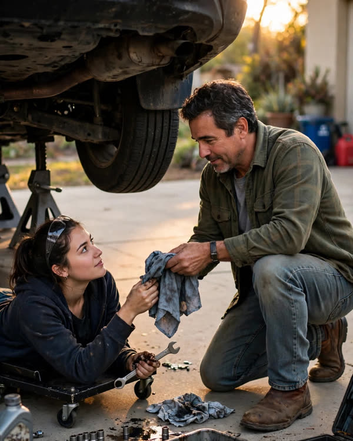
The Oil Change
My father taught me to change oil for one reason, and it was not the car.
Read the full story →
The Old Textbook
The used textbook cost four dollars, and my mother's name was written inside the front cover in handwriting I knew better than my…
Read the full story →
The One That Got Away
Every family has a story that gets told at every gathering, and ours was the fish.
Read the full story →
The Open-When Box
My mother handed me the box at the door of my first apartment and said, "Don't be dramatic and open them all tonight."
Read the full story →
The Parking Tickets
My mother found the shoebox the spring after her treatment ended, on the top shelf of the hall closet, in my father's…
Read the full story →
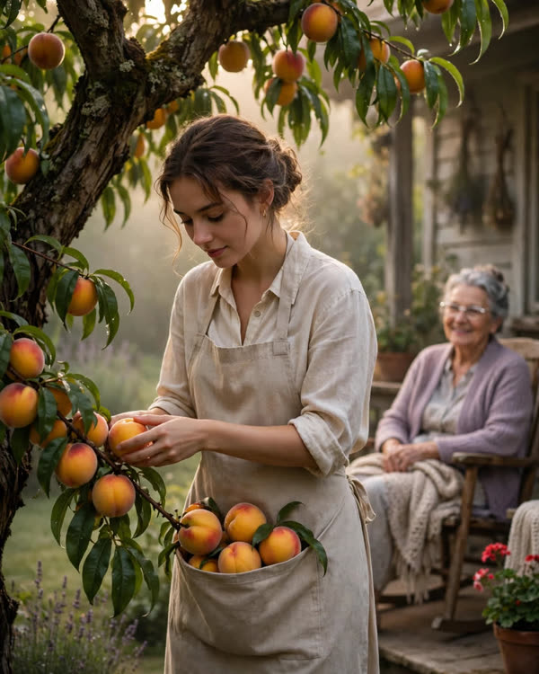
The Peach Tree
The day I was born, my grandmother planted a peach tree in her backyard and told the whole family it would feed me someday.
Read the full story →
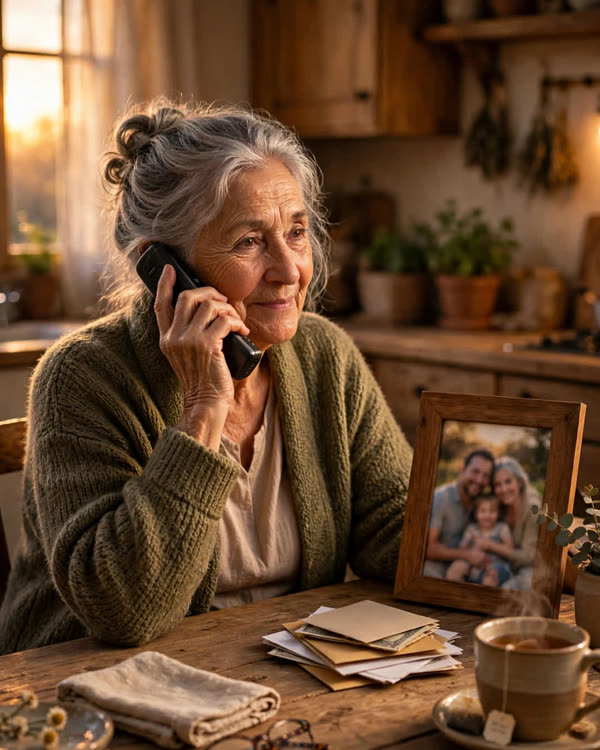
The Phone Bill
My sister found out our mother was paying my phone bill when Mom was in the hospital for two nights and the reminder texts…
Read the full story →
The Porch Light
For eleven years, the porch light across the street was the only one on our block that never went out.
Read the full story →
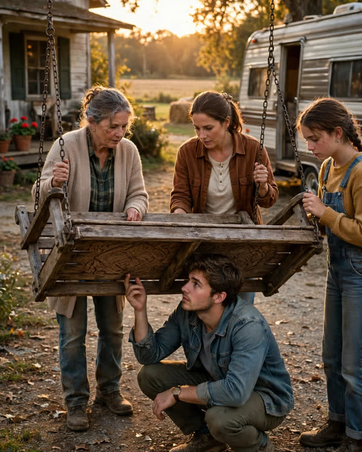
The Porch Swing
The porch swing had held my grandparents for fifty years, and when we moved it to my first house, we found the words my…
Read the full story →
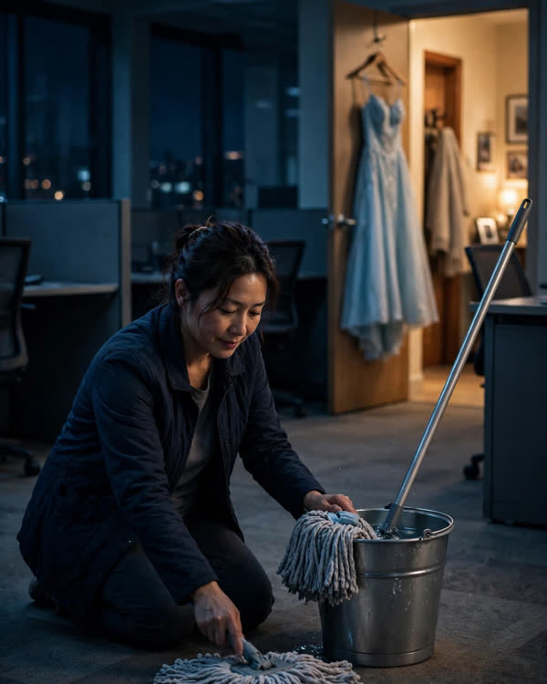
The Prom Dress Fund
My mother told me my prom dress cost forty dollars at the thrift store, and I believed her for eleven years.
Read the full story →
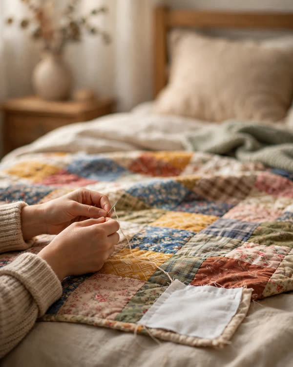
The Quilt
There are twenty-three squares in my grandmother's quilt, and every single one of them is a year of our family's life.
Read the full story →
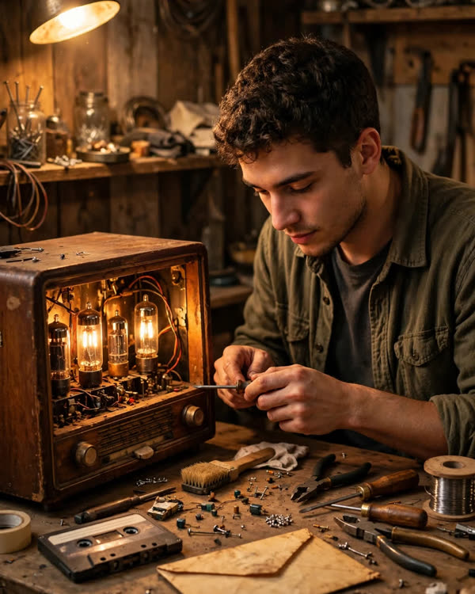
The Radio Hour
Every Sunday at four o'clock, my grandfather turned the kitchen radio on ten minutes early, just to listen to it warm up.
Read the full story →
The Raincoat
My father owns an umbrella that has been broken for twenty-six years, and he refuses to throw it away.
Read the full story →
The Recipe Card Stains
Every stain on my grandmother's recipe cards is a story, and the year after her funeral, I cooked through every single one.
Read the full story →
The Recipe in Two Halves
When our mother died, she left my sister exactly half a recipe, and she left me the other half. On purpose.
Read the full story →
The Recipe She Never Wrote Down
For twenty years I begged my mother to write down her chicken and dumplings, and for twenty years she laughed and said, "You just…
Read the full story →
The Red Pen
For a whole year, Mrs. Garrett covered my essays in red ink, and I was sure she hated me.
Read the full story →
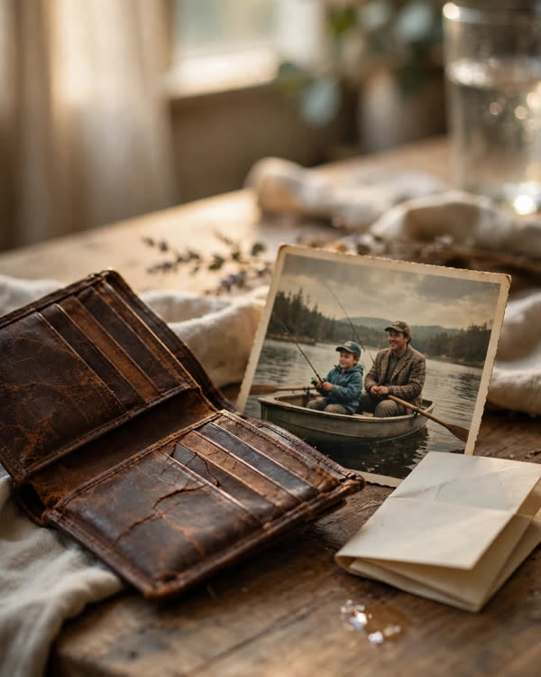
The Returned Wallet
The wallet I lost in 1998 came back in the mail in 2024, and every single dollar was still inside.
Read the full story →
The School Bus Driver
For three years, Bus 12 waited two extra minutes at the corner of Elm every morning, and the driver never once wrote him up for…
Read the full story →
The Shared Headphones
For eleven summers, my sister and I rode the same bus to our grandmother's house, and we owned exactly one pair of headphones…
Read the full story →
The Silent Drive
My father drove me eight hours to my new life and said maybe forty words the entire way.
Read the full story →
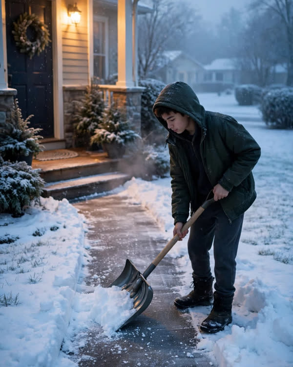
The Snow Shovel
The winter my wife died, someone shoveled my driveway every single morning, and I never once saw who it was.
Read the full story →
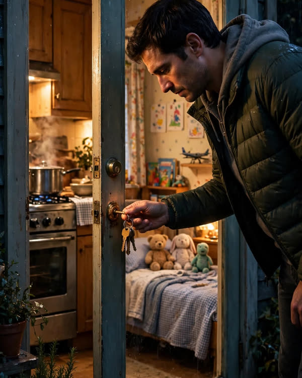
The Spare Key
My parents kept a spare key to their house with my name on it for thirty years — and the night my marriage ended, it was still…
Read the full story →
The Spelling Test
I was the worst speller in the fifth grade, and my teacher was the first adult who ever asked why instead of how come I hadn't…
Read the full story →
The Substitute
She was only our teacher for one day, and she said one sentence to me that I have carried for twenty years.
Read the full story →
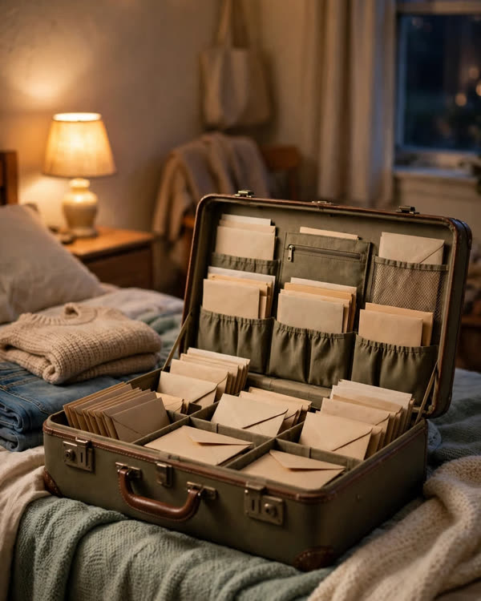
The Suitcase Notes
The night before I left for college, my mother zipped my suitcase shut herself and said, "Don't open the pockets until you need…
Read the full story →
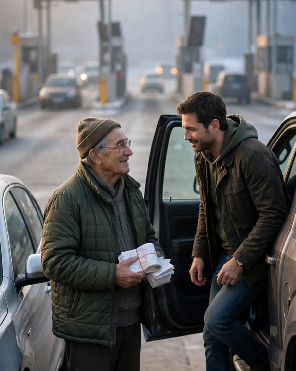
The Toll Booth
For one whole year, I paid the toll for the car behind me — and I never once looked in the mirror to see who it was.
Read the full story →
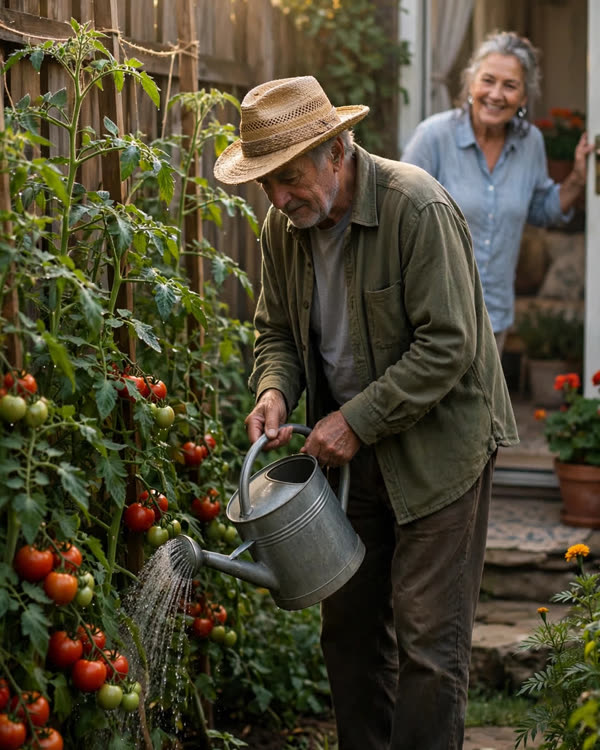
The Tomato Fence
The fight over the tomato fence lasted two summers, produced one lawyer's letter, and ended with the best harvest our street had…
Read the full story →
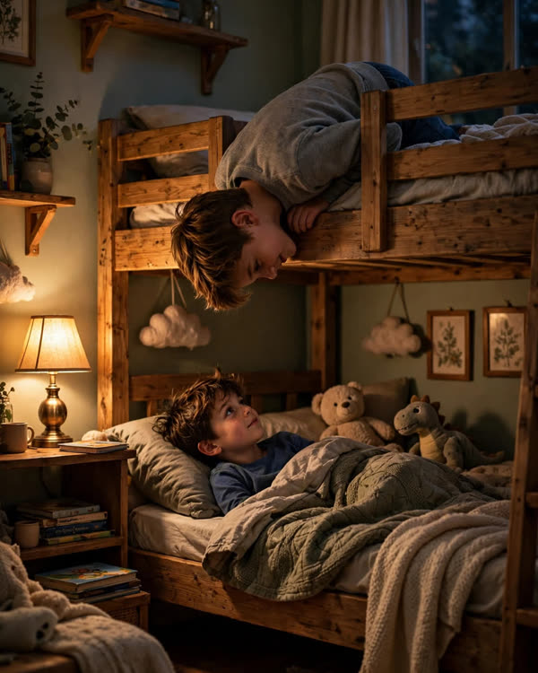
The Top Bunk
The top bunk was never just a bed. It was a country, and my brother Danny ruled it.
Read the full story →
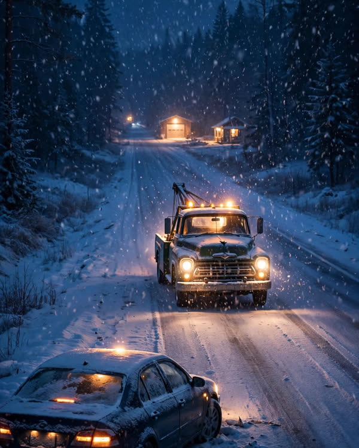
The Tow Truck
On Christmas Eve, in the snow, with three kids asleep in the back seat, our car died forty miles from anywhere.
Read the full story →
The Translator
The emergency room nurse asked the family what was wrong, and the little boy answered by screaming for his grandmother in a…
Read the full story →
The Two Chairs
On my grandparents' porch there are two old chairs, angled toward each other, and for fifty years, that angle held their whole…
Read the full story →
The Two Keys
Our father's will was twelve pages long, and it managed to give my brother the house, me a single key, and both of us a fresh…
Read the full story →
The Voicemail
There is one voicemail on my phone I will never delete. It is thirty-eight seconds long, and most of it is about a tire.
Read the full story →
The Wig
The night my sister's hair started coming out, she called me from her bathroom floor, holding a handful of it like an injured…
Read the full story →
The Window Seat
The man in seat 14A had been watching the clouds for twenty minutes when he gave up his window seat to a stranger.
Read the full story →
The Work Boots
The boots were too big for me by half a size, and I wore them anyway.
Read the full story →
The Wrong Train
My grandparents met because my grandmother got on the wrong train, and they have been grateful to that mistake every year for…
Read the full story →
Twenty Dollars
The card declined twice, and by the third try, the baby was screaming.
Read the full story →